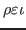

Quanta  deals with the dynamics and spectroscopy of molecular systems. This is said mainly to stress that we are far away from the part of physics usually know as solid state physics or solid state theory. There is no prejudice or personal liking behind this. It is to say that there are huge differences in theoretical approaches to a problem of regular solid and small molecular aggregates. Many concepts discussed here do apply in solid state problems and many do not. It is a huge mistake to think that concepts that bare the same name are automatically transferable across the theoretical domains such as chemical physics and solid state physics.
We do not explain quantum mechanics itself here.